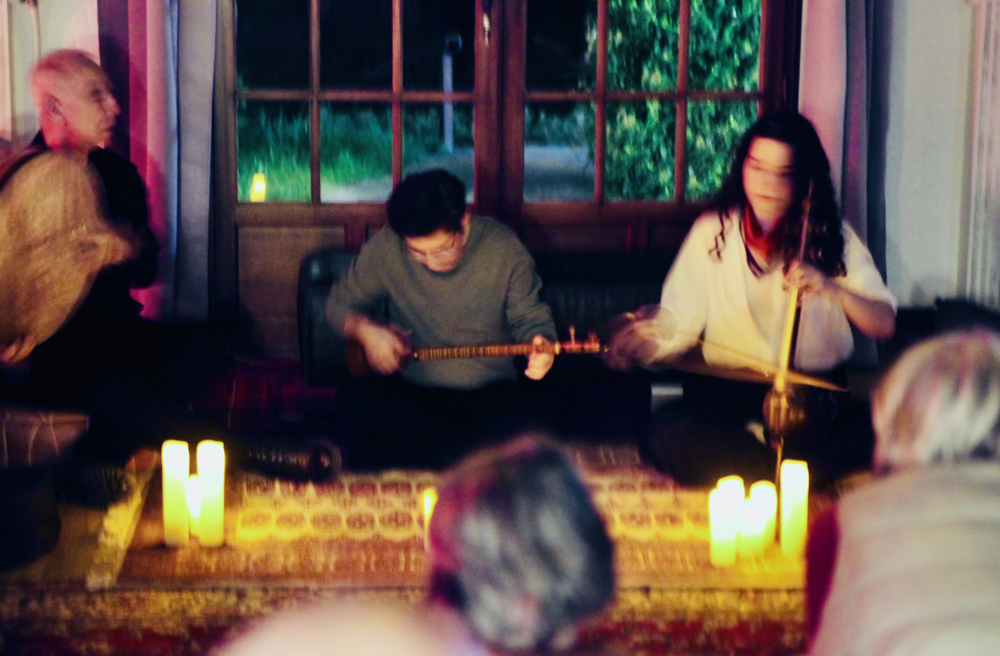
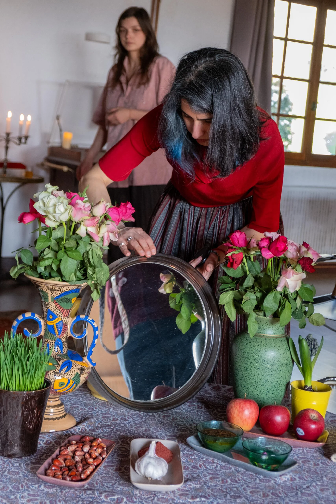
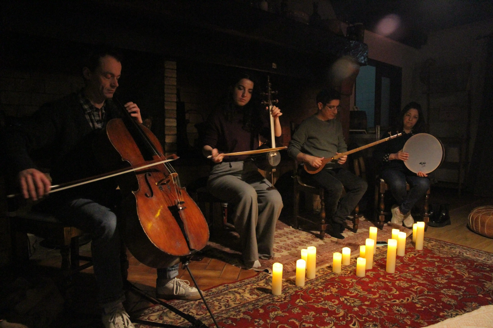
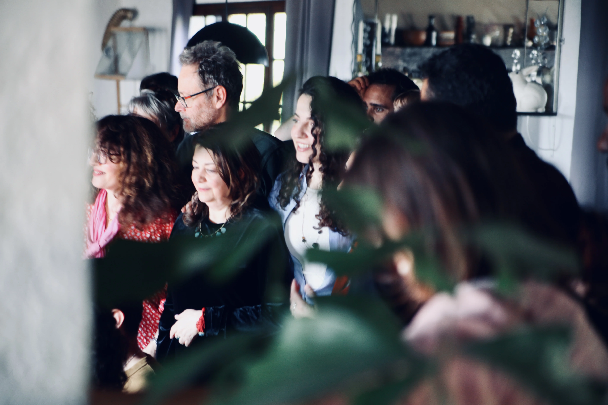
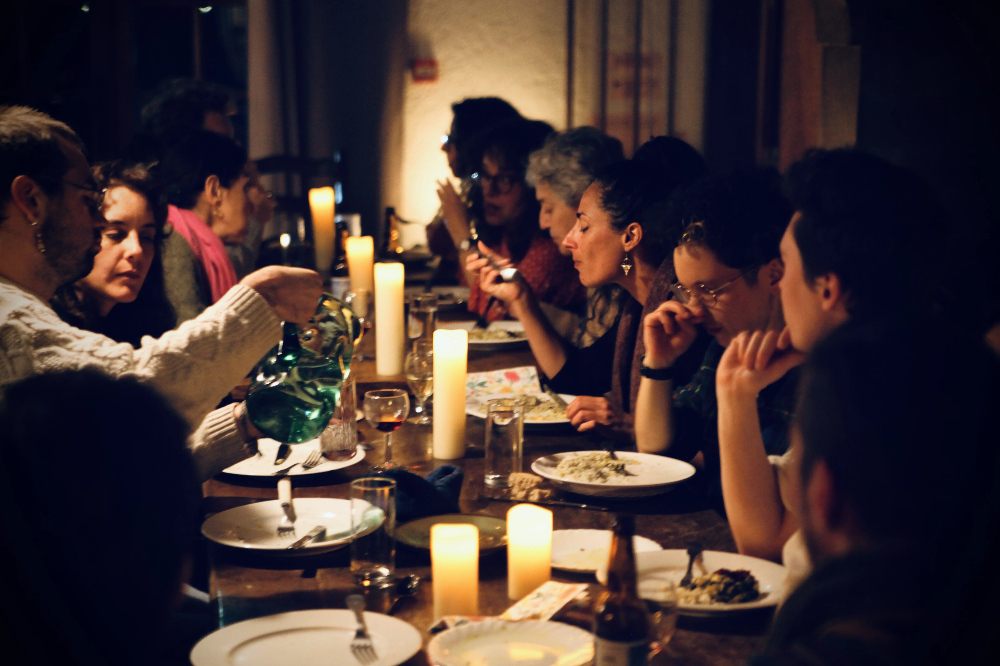

01
Nowruz As Now!
A space for artistic exchange. Project documentation and shared moments.
More about next Nowruz As Now! project →Nowruz As Now! 2026 — Four Days of Art, Encounters, and Celebration
From 17 to 20 March 2026, we gathered at Domaine Foray, in the beautiful countryside of Burgundy, to celebrate Nowruz, the Persian New Year, in our own way!
For four days, Nowruz As Now! brought together artists, friends, neighbours, and curious visitors to share traditions, discover different artistic practices, and simply enjoy being together.
We started with Chaharshanbe Suri, the Iranian festival of fire, and continued all the way to the arrival of the New Year. Along the way, there was music, dance, performances, film screenings, theatre, jam sessions, cultural activities, and of course, plenty of food!
7 artists from Iran, Afghanistan, and France joined us, bringing their own practices, stories, and perspectives into the celebration. Together, we explored how familiar traditions and rituals could become starting points for new artistic experiences and unexpected encounters.
But not everything happened on a stage or as part of a planned programme. Some of our favourite moments happened around the dinner table, during spontaneous conversations, while cooking together, or simply sharing a space with people we had only just met.
And that was exactly what we hoped for: to create a place where art could become part of everyday life, where everyone could participate in their own way, and where cultural differences could bring us closer rather than keep us apart.
By the end of the four days, 219 people had been part of this little adventure. Some came for a concert, others for a meal or a performance, and some stayed to experience much more.
For us, Nowruz As Now! was never just about celebrating the New Year. It was about what happens when people come together, share what they have, and allow something new to grow from those encounters.
A big thank you to everyone who made this first edition possible. To the artists, participants, volunteers, collaborators, and everyone who brought their energy, curiosity, and generosity into this experience.
We can't wait to see what we will create together next!
A little look back at our four days together:
- 4 days of celebration, from the festival of fire to the Persian New Year
- 7 artists from different backgrounds and disciplines
- 219 participants sharing the experience
- 9 programmes bringing together music, performances, cinema, theatre, food, and cultural activities
Organised by SYMBIOTIKA in collaboration with Domaine Foray, Villecien, Burgundy, France.
What follows is a glimpse into the moments, people, and exchanges that shaped our first edition.



